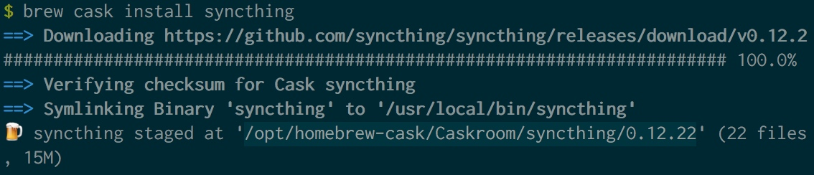
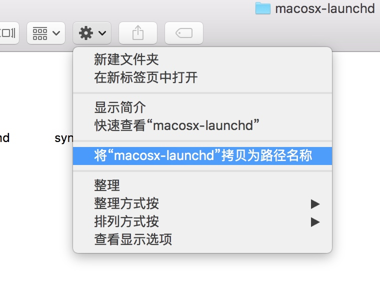

这些记录没有任何意义，请忽略
cp -Rp acpi_ibm* /boot/kernel/
cp -RP acpi_video.ko* /boot/kernel/
cp -Rp iwn1000fw.ko* /boot/kernel/
cp -Rp if_iwn.ko* /boot/kernel/
cp -Rp wlan* /boot/kernel/
cp -Rp fuse.ko* /boot/kernel/
sed -i ".bak" 's/yes/no/g' /usr/local/etc/pkg/repos/local.conf
sed -i ".bak" 's/no/yes/g' /usr/local/etc/pkg/repos/FreeBSD.conf
pkg update
pkg install vim-lite proxychains-ng shadowsocks-libev aria2
vi /boot/loader.conf
#######
acpi_ibm_load="YES"
acpi_video_load="YES"
if_iwn_load="YES"
iwn1000fw_load="YES"
snd_ich_load="YES"
###########
saver="green" blanktime="300" scrnmap="NO"
powerd_enable="YES"
powerd_flags="-i 80 -p 200 -b adaptive -a adaptive -n adaptive"
performance_cx_lowest="C3"
economy_cx_lowest="C3"
performance_cpu_freq="HIGH"
sysctl -a | grep cx_
/etc/sysctl.conf
hw.acpi.cpu.cx_lowest=C3
最早的时候个人同步我使用的是 BTsync ，但这家伙后来改版后有诸多不便，于是转投了我一直看好的另一个同步工具 —- Syncthing 。开源且多平台 （ iOS 上不行，不过 iOS 除了照片也没什么可以同步的了 ），我最喜欢的就是可以自建一个 relay 。详细使用上比较简单，我今天只记录一下我在 Mac 上的操作。
操作需要使用 iTerm 或者 Terminal 请自备。
其实你也可以自己下载安装包 (https://github.com/syncthing/syncthing/releases)，解压后把“ syncthing ” 这个可执行文件放到 /usr/local/bin 。（ 我建议你养成好习惯，所有自己下载安装的终端都丢这里 ）
如果你有了 brew 则可以
brew tap caskroom/cask
brew tap caskroom/versions
brew cask install syncthing
会看到下图

然后进入上图中的 open /opt/homebrew-cask/Caskroom/syncthing/0.12.22 然后进入安装文件夹（如果你有多个版本，则进入最高的那个就可以了），找到 syncthing.plist ，通常位置安装目录的 etc/macosx-launchd 。
在 Finder 里，不要选中任何文件的情况下，点击如下图标，拷贝为路径，如果你的系统没有这个选项，请试着按下 Option 键。

接着在 iTerm 或者 Terminal 里输入
cd $(pbpaste)
sed -i .bak "s/USERNAME/$(whoami)/g" ./syncthing.plist
sed -i .bak "s/\Users\/$(whoami)\/bin/usr\/local\/bin/g" ./syncthing.plist
sed -n '/Users/p' ./syncthing.plist
sed -n '/local/p' ./syncthing.plist
你应该会看到输出了带你的用户名的几行以及带有 syncthing的一行：
<string>/Users/bao3</string>
<string>/Users/bao3/Library/Logs/Syncthing.log</string>
<string>/Users/bao3/Library/Logs/Syncthing-Errors.log</string>
<string>/usr/local/bin/syncthing</string>
比较简单，我是直接 copy 过去:
cp syncthing.plist ~/Library/LaunchAgents/syncthing.plist
launchctl load ~/Library/LaunchAgents/syncthing.plist
随后会打开网页，让你登录 http://127.0.0.1:8384